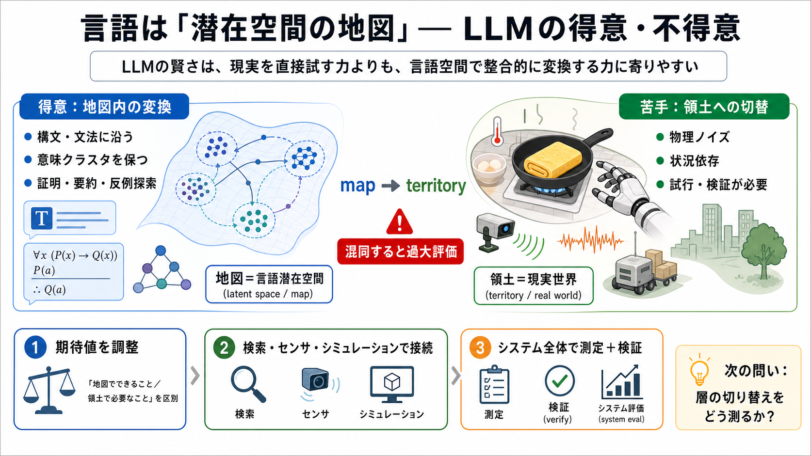

Experts Have World Models. LLMs Have Word Models.
As we discussed on the Yi Tay 2 episode, there are 3 kinds of World Models conversations today: The first and most commo…

As we discussed on the Yi Tay 2 episode, there are 3 kinds of World Models conversations today: The first and most commo…
# LLMs and Beyond: All Roads Lead to Latent Space. Today's AI technologies are based on deep learning,1 yet “AI” is comm…
* Latent reasoning is the process where LLMs perform multi-step inference within internal hidden states rather than rely…
# Training Large Language Models to Reason in Continuous Latent Space. LLMs have traditionally been restricted to reason…
1. What Is a World Model? # **Do LLMs Have Internal World Models?**. ## **A technical argument for and against**. > **…